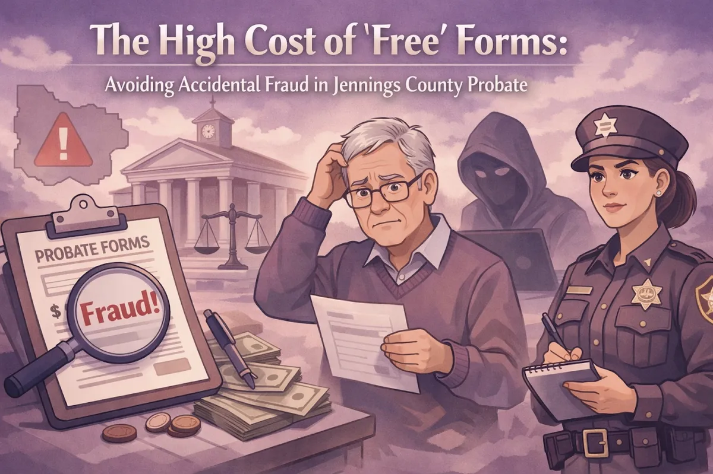

The High Cost of 'Free' Forms: Avoiding Accidental Fraud in Jennings County Probate

One thing I've seen time and again is people in Jennings County trying to navigate the probate process using "free" forms they found online. The goal is usually the same: save a few bucks and avoid the perceived cost of hiring an attorney.
But here is the catch. By trying to save a little bit of money upfront, many people are accidentally putting themselves in a position where they might be committing fraud without even realizing it.
I'm Chris Doran, and as a small-town lawyer who wears many hats, I see this struggle often. Whether you are in North Vernon, Vernon, Commiskey, Hayden, or Scipio, you deserve legal help that is accessible and straightforward. At Chris Doran Law LLC, I pride myself on being someone who listens to what you have to say and gives you clear options.
Let's talk about why those "free" forms can be the most expensive mistake you ever make and how we can help you get it right the first time.
The Allure, and Danger, of the "Free" Form
It is easy to understand why someone would reach for an online template. Losing a loved one is a heavy burden, and the legal requirements that follow can feel like just another pile of paperwork. When you are looking at funeral costs and settling debts, a "free probate form" looks like a lifeline.
However, there is a recurring problem: people are using the wrong forms for their specific situations. Probate law in Indiana isn't a one-size-fits-all deal. A form that works for a small estate might be completely illegal to use for a larger one.
When you use the wrong form, you aren't just making a clerical error. You are telling the court, and the State of Indiana, that your situation fits a specific legal box that it might not actually fit.

Accidental Fraud is Still Fraud
This is the part that surprises most people. In the legal world, "fraud" isn't always about a "bad guy" trying to steal money. Often, it's about "misrepresentation."
When you sign a probate document, you are usually signing it under the penalty of perjury. This means you are swearing to the court that everything on that paper is 100% accurate. If you use a form intended for an estate with no debts, but your loved one actually owed money to creditors, you have technically filed a false statement.
Even if you didn't mean to lie, the legal consequences remain. Filing the wrong paperwork can lead to:
Rejected Filings. The court sends you back to square one, often after you've already waited weeks for a response.
Personal Liability. If you distribute assets incorrectly because you followed a generic form, you could be held personally responsible for paying back creditors or other heirs out of your own pocket.
Clouded Titles. If you are trying to transfer property in North Vernon or Hayden, an incorrect probate form can create a "break in the chain of title." This means when you eventually try to sell the house, the sale could fall through because the deed wasn't handled correctly during probate.
Why Local Knowledge Matters in Jennings County
When you download a form from a random website, that form doesn't know how the Jennings County Circuit Court operates. It doesn't know the specific local rules that the judges might expect.
In Indiana, probate matters are handled through the Jennings Circuit Court. Since we don't have a dedicated "Probate Court" in our county, these cases are handled by the same judges who deal with everything from criminal trials to civil disputes. They expect things to be done right.
I've spent my career handling a wide variety of complex legal matters during my tenure, and I know that local nuances matter. If you are filing documents in Vernon, you want someone who knows the local staff and understands how to navigate the specific requirements of our county offices.
The Misconception of Cost
The biggest reason people avoid calling a lawyer is the fear of the bill. I get it. We are a community of hardworking people, and every dollar counts.
But here is the reality: hiring an attorney for probate is often significantly cheaper than fixing the mess left behind by a DIY mistake.
Think of it like car repair. You can try to fix a complex engine problem yourself with a YouTube video and a basic wrench. If you get it wrong, you might blow the engine, and then you're looking at a $5,000 bill instead of a $200 tune-up. Probate is exactly the same.
When you work with Chris Doran Law LLC, we talk about costs upfront. We are transparent about our fees because we believe in honesty. In many probate cases, the legal fees are actually paid out of the estate's assets, not directly out of your pocket today. This is a detail many people don't realize until they sit down and talk with us.
Personalized Guidance vs. A Generic Template
A form can't talk back to you. It can't ask, "Did your father have any outstanding medical bills?" or "Is there a child from a previous marriage we need to consider?"
My job is to be a problem-solver. I sit down with you, listen to your specific situation, and then give you a range of options. Sometimes, we don't even need a full probate process. Indiana has "small estate" procedures that are much faster and less expensive, but you have to qualify for them correctly.
We Are Here for Our Neighbors
Whether you're dealing with property in Commiskey or settling an estate for a long-time Scipio resident, we are here to help. I live and work in this community. I see my clients at the grocery store and at local events. That means my reputation is built on being helpful and fair.
If you are feeling overwhelmed by the paperwork or if you've already tried to file something and it was rejected, don't panic. We can fix it. We can look at what you've done, identify the gaps, and get you back on the right track.
We don't just "do law", we help people through some of the toughest times in their lives. We wear many hats to make sure your legal needs are met without the stress of wondering if you're doing it right.
Let's Make a Plan Together
Probate doesn't have to be a scary or unaffordable process. It just requires the right guidance. By choosing a local attorney who knows the Jennings County landscape, you are protecting yourself from accidental fraud and ensuring that your loved one's legacy is handled with the respect it deserves.
If you are ready to stop guessing with "free" forms and want some real answers, reach out to us. We'll listen to your story and help you find the best path forward for your family.
Don't let the fear of a legal fee lead you into a much larger legal headache. Let's get it done right, right here in Jennings County.